Chapter 5. Radar
Section 8. Radar Departures
5-8-1. PROCEDURES
- When vectoring a departing aircraft on a radar SID, concurrent use of a diverse vector area (DVA) is not permitted.
- When the departure route description on a radar SID contains the phrase, “Fly assigned heading,” “as assigned by ATC,” or similar phrases, with a published range of headings in the route description, assign headings or vectors as needed not to exceed those headings in the published range until reaching the MVA/MIA.
5-8-2. INITIAL HEADING
- Before departure, assign the initial heading consistent with either a SID being flown or DVA, if applicable, when a departing aircraft is to be vectored immediately after takeoff. At locations that have a DVA, concurrent use of both a SID and DVA is not permitted.
- At locations with both SIDs and DVAs, an amended departure clearance is required to cancel a previously assigned SID and subsequently utilize a DVA or vice versa. The amended clearance must be provided to the pilot in a timely manner so that the pilot may brief the changes in advance of entering the runway.
- Issue an altitude to maintain with the initial heading when the heading will take the aircraft off a departure procedure that contains both a published lateral path to a waypoint and crossing restrictions.
- When conducting simultaneous parallel runway departures utilizing RNAV SIDs, advise aircraft of the initial fix/waypoint on the RNAV route.
5-8-3. SUCCESSIVE OR SIMULTANEOUS DEPARTURES
TERMINAL
Separate aircraft departing from the same airport/heliport/vertiport or adjacent airports/heliports/vertiports in accordance with the following minima provided radar identification with the aircraft will be established within 1 mile of the takeoff runway end/helipad/vertipad and courses will diverge by at least the minimum required, as stated below.
- Between successive departures from the same runway/helipad/vertipad or parallel runways/takeoff courses separated by less than 2,500 feet- 1 mile if courses diverge by 15 degrees or more immediately after departure. (See FIG 5-8-1, FIG 5-8-2, and FIG 5-8-3.)
FIG 5-8-1Successive Departures 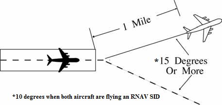
FIG 5-8-2Simultaneous Departures 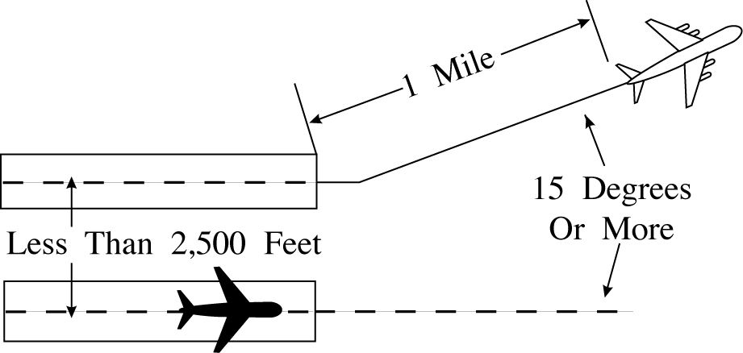
FIG 5-8-3Simultaneous Departures 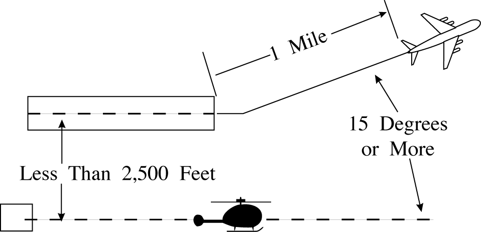
- Between simultaneous departures departing in the same direction from parallel runways/takeoff courses, authorize simultaneous takeoffs if the centerlines/takeoff courses are separated by at least 2,500 feet and courses diverge by 15 degrees or more immediately after departure. (See FIG 5-8-5, and FIG 5-8-6.)
- When both aircraft are flying an RNAV SID:
- Between successive departures from the same runway– 1 mile if courses diverge by 10 degrees or more immediately after departure. (See FIG 5-8-1.)
- Between simultaneous departures from parallel runways/takeoff courses, authorize simultaneous takeoffs if the centerlines/takeoff courses are separated by at least 700 feet and less than 2,500 feet, courses diverge by 15 degrees or more, and departures are released in accordance with the release distance stagger stated in TBL 5-8-1 below.
TBL 5-8-1Departure Release Distances Distance to Divergence
(Measured from the further DER)Minimum Centerline Separation
Release Distance Stagger
Immediately
700
1000 feet
No later than 5 NM
1020
2000 feet
No later than 8 NM
1130
3000 feet
No later than 11 NM
1360
4000 feet
FIG 5-8-4Simultaneous Dependent Departures 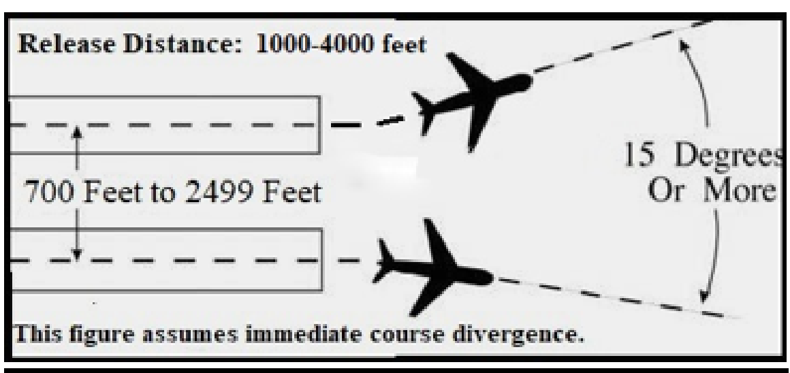
- Between simultaneous departures from parallel runways/takeoff courses, authorize simultaneous takeoffs if the centerlines/takeoff courses are separated by at least 2,500 feet and courses diverge by 10 degrees or more immediately after departure. (See FIG 5-8-5, and FIG 5-8-6.)
FIG 5-8-5Parallel Runway Departures 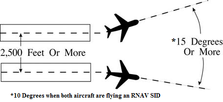
FIG 5-8-6Parallel Helipad/Vertipad Course Departures 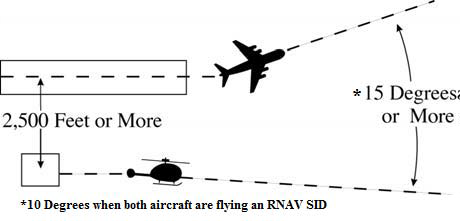
- Between aircraft departing from diverging runways:
- Nonintersecting runways. Authorize simultaneous takeoffs if runways diverge by 15 degrees or more. (See FIG 5-8-7.)
FIG 5-8-7Nonintersecting Runway Departures 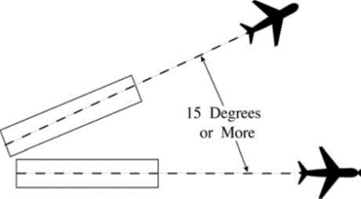
- Intersecting runways and/or takeoff courses that diverge by 15 degrees or more. Authorize takeoff of a succeeding aircraft when the preceding aircraft has passed the point of runway and/or takeoff course intersection. When applicable, apply the procedure in paragraph 3-9-5, Anticipating Separation. (See FIG 5-8-8 and FIG 5-8-9.)
FIG 5-8-8Intersecting Runway Departures 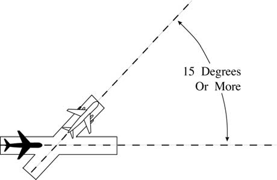
FIG 5-8-9Intersecting Helipad/Vertipad Course Departures 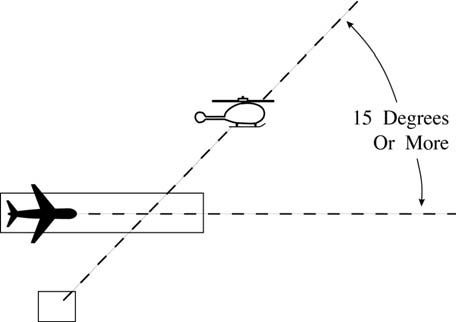
- Nonintersecting runways. Authorize simultaneous takeoffs if runways diverge by 15 degrees or more. (See FIG 5-8-7.)
5-8-4. DEPARTURE AND ARRIVAL
TERMINAL. Except as provided in paragraph 5-8-5, Departures and Arrivals on Parallel or Nonintersecting Diverging Runways, separate a departing aircraft from an arriving aircraft on final approach by a minimum of 2 miles if separation will increase to a minimum of 3 miles (5 miles when 40 miles or more from the antenna) within 1 minute after takeoff.
5-8-5. DEPARTURES AND ARRIVALS ON PARALLEL OR NONINTERSECTING DIVERGING RUNWAYS
TERMINAL. Authorize simultaneous operations between an aircraft departing on a runway and an aircraft on final approach to another parallel or nonintersecting diverging runway if the departure course diverges immediately by at least 30 degrees from the missed approach course until separation is applied and provided one of the following conditions is met:
- When parallel runway thresholds are even, the runway centerlines are at least 2,500 feet apart. (See FIG 5-8-10 and FIG 5-8-11.)
FIG 5-8-10Parallel Thresholds are Even 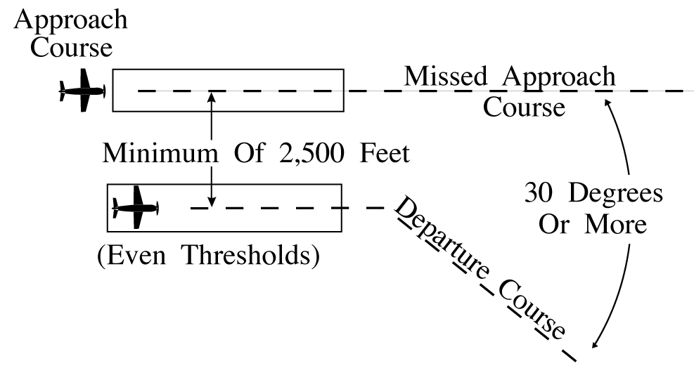
FIG 5-8-11Parallel Thresholds are Even 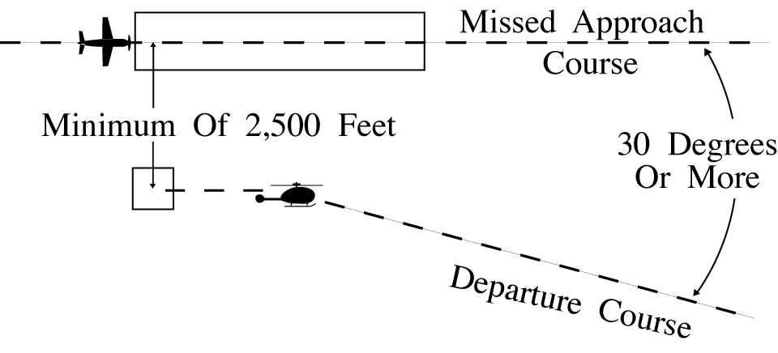
- When parallel runway thresholds are staggered and:
- The arriving aircraft is approaching the nearer runway: the centerlines are at least 1,000 feet apart and the landing thresholds are staggered at least 500 feet for each 100 feet less than 2,500 the centerlines are separated. (See FIG 5-8-12 and FIG 5-8-13.)
FIG 5-8-12Parallel Thresholds are Staggered 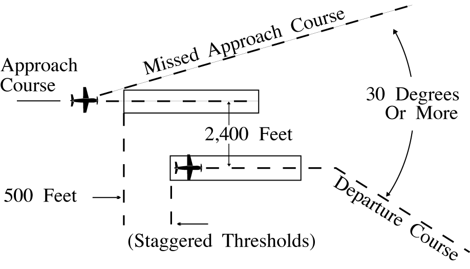
FIG 5-8-13Parallel Thresholds are Staggered 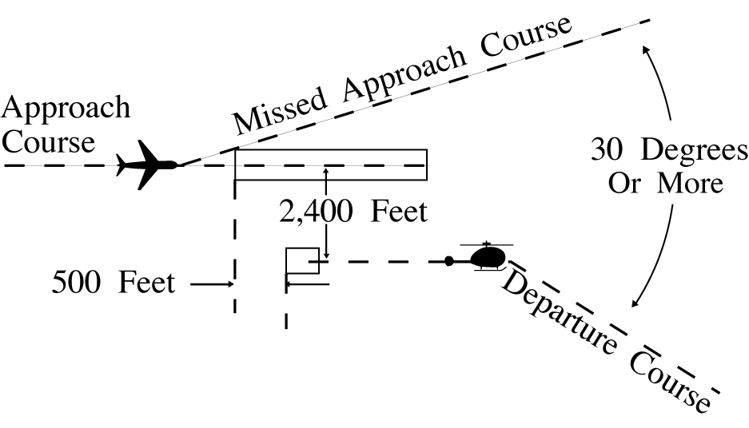
- The arriving aircraft is approaching the farther runway: the runway centerlines separation exceeds 2,500 feet by at least 100 feet for each 500 feet the landing thresholds are staggered. (See FIG 5-8-14.)
FIG 5-8-14Parallel Thresholds are Staggered 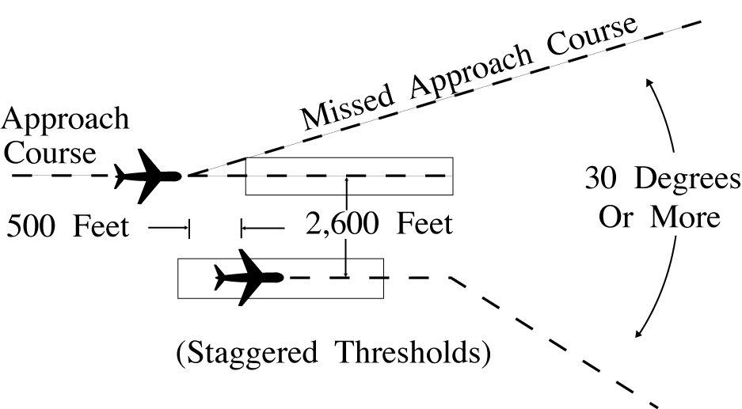
- The arriving aircraft is approaching the nearer runway: the centerlines are at least 1,000 feet apart and the landing thresholds are staggered at least 500 feet for each 100 feet less than 2,500 the centerlines are separated. (See FIG 5-8-12 and FIG 5-8-13.)
- When nonintersecting runways diverge by 15 degrees or more and runway edges do not touch. (See FIG 5-8-15.)
FIG 5-8-15Diverging Nonintersecting Runways 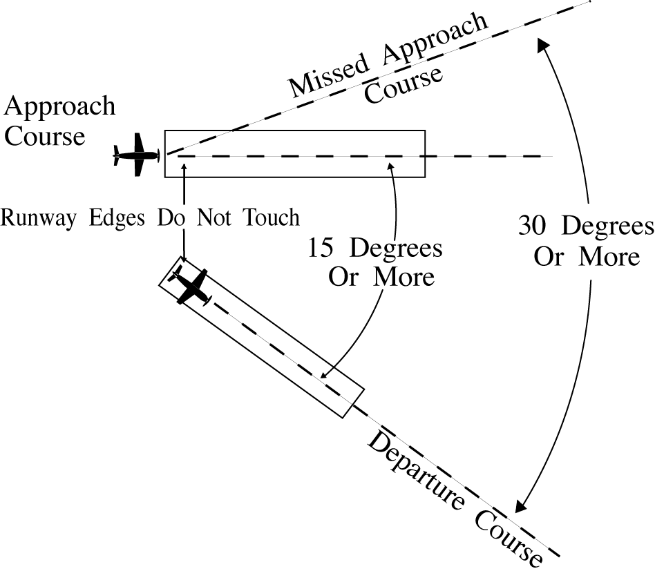
- When the aircraft on takeoff is a helicopter or powered‐lift, hold the departure until visual separation is possible or apply the separation criteria in subparagraphs a, b, or c.